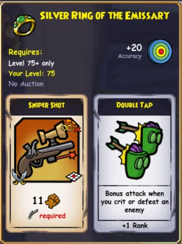
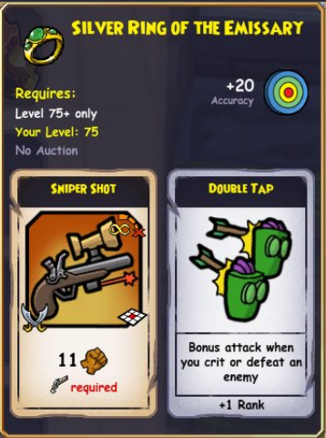

Discretionary Advisory
Any of the gear shown here was from test realm and is subject to change. While we are pretty sure the gear pieces will look like this and have these stats, there is no guarantee at this moment. Anyways, let's get right into it!
All of the hats, robes, and boots from this update look like this:
A little schnazzy, don't ya think?
THE GEAR
Rooke's Weapons
Deacon's Weapons
Kane's Weapons

Phule's Weapons
Bishop's Weapons

Class-Specific Recommendations/Theory Crafting
Buccaneer
For Buccaneers, what you use is highly dependent on your pet's epic grants and the gear you are using. I will, however, give some ideal suggestions if you can manage to fit these items into your build. Turn the Tide 5, Hold the Line 5, Vengeance Strike 5, Repel Boarders 3, and Bladestorm 5 are all great things to go for as a buccaneer. Note: It seems like the weapons gain bonuses from your highest stat.


- Royal Guard's Helm: Provides a useful Hold the Line that could get you to Hold the Line 5 and a useful extra copy of Brutal Charge.
- Royal Guard's Garments: Gives you an extra copy of Whale's Might, a valuable strength buff, and it gives a Vengeance Strike that could get you to Vengeance Strike 5.
- Armada General's Hat: Gives you a handy heal and a Hold the Line that could get you to Hold the Line 5.
- Armada General's Shoes: It gives Merciless, which lets you get an extra strike if the enemy is below a certain health threshold. It also provides a double attack that can start a chain that even stuns the enemy to prevent any counter epics that could ruin a buccaneer's day.
- Gilded Ring: Gives a valuable Valor's Fortress useful for hard battles and could also get you Repel Boarders 3.
- Silver Ring: Has a Riposte if you think that would compliment your build.
- Queen's Protective Piece: Potentially great because it could get you Repel Boarders 3 and Hold the Line 5.
- Rooke's Endgame Halberd: Potentially great because it could get you Repel Boarders 3 and Vengeance Strike 5. It also provides a double attack that starts chains and a defense buff in one as a power.
- Rooke's Endgame Hammer: Potentially great because it could get you Vengeance Strike 5 and Hold the Line 5. It has the same power as the halberd.
- Kane's Endgame Blade: Potentially great because it gives you a relentless copy and could get you Hold the Line 5. The power that gives +15% crit chance to everyone is very strong.
Swashbuckler
For Swashbucklers, the best gear is heavily dependent on your pet's and gear's epic grants. That being said, I will note what we think is ideal if your build can accommodate it. Note: It seems like the weapons gain bonuses from your highest stat.


- Armada Enigma's Hat: All the stats are helpful for swashbucklers. The valor's fortress is valuable for hard fights, and the riposte can get you to riposte 5.
- Armada Enigma's Shoes: The stats are all helpful for swashbucklers. The cloak and dagger will allow you to hide at the end of the round, very valuable for extra damage and safety. The sneaky sneaky gives you a 10% chance to go hidden every round as well.
- Golden Ring of the Leader: The repel boarders is just a bonus epic, but the valor's fortress can be helpful in hard fights.
- Silver Ring of the Enigma: The dodge is helpful along with a riposte that could get you to riposte 5. The extra assassin's strike copy can help if you run out of them.
- Clasp of the Vengeful Queen: The lack of epic grants is a downside, but the cloak and dagger and the obscuring cloud are very useful powers to have.
- Phule's Endgame Dueling Set: It could get you to riposte 5 and it gives a valuable double tap.
- Deacon's Endgame Dueling Set: The retaliation and blade storm are just good epics.
- Deacon's Endgame Dueling Piece: The retaliation is a good epic. If you train elusive 3, this elusive grant will give valuable bonus stats.
Musketeer
For Musketeers, chaining epics and overwatch 5 are useful epic grants to get. Note: It seems like the weapons gain bonuses from your highest stat.

 



- Armada Emissary's Hat: The stats are all helpful for musketeers. The overwatch could get you to overwatch 5.
- Armada Emissary's Shoes: The stats are once again great. The shining star is the eagle eyes, which gives 1 extra range to anyone in an adjacent square to you. This is amazing on musketeers who rely on ranged power. The obscuring cloud is also great utility.
- Silver Ring of the Emissary: The accuracy is helpful. The double tap is a good epic and the sniper shot is a helpful power.
- Deacon's Endgame Blasters: The overwatch can get you to overwatch 5. The true grit is not bad, but the power is a good one for damage and traps.
- Deacon's Endgame Mage Arms: The power lies in the shooty/staffy hybrid. The readied spell can help get you to readied spell 5. The true grit is good too.
- Bishop's Endgame Magi-Blaster: This is another shooty/staffy hybrid. The two epics are both great chaining epics.
Privateer
For Privateers, strong powers and readied spell 5 are important to have. Note: It seems like the weapons gain bonuses from your highest stat.


- Clasp of the Mourning Queen: The valor's armor and revive heal are both very helpful.
- Queen's Vigilant Piece: This can get you to readied spell 5. The jelly polyp is a helpful spell-casting summon too.
- Ebon Smart Eccentric's Uniform: The power on this robe is very helpful in hard fights if you absolutely need it.
- Bishop's Endgame Wand: This wand has good range and the damage on the mojo javelin power it gives is extremely high.
- Bishop's Endgame Staff: This staff is also good for the same reasons as the wand above, but it sacrifices 1 range for a mojo rising epic.
Witchdoctor
For Witchdoctors, strong powers and readied spell 5 are important to have. Note: It seems like the weapons gain bonuses from your highest stat.


- Clasp of the Mourning Queen: The valor's armor and revive heal are both very helpful.
- Queen's Vigilant Piece: This can get you to readied spell 5. The jelly polyp is a helpful spell-casting summon too.
- Armada Mage's Hat: The stats on this hat are all good for witchdoctor. The readied spell can help you get readied spell 5. The power is great, giving witchdoctor an infinite range aoe that doesn't require line of sight and also leaves fire traps in empty squares.
- Bishop's Endgame Wand: This wand has good range and the damage on the mojo javelin power it gives is extremely high.
- Armada Mage's Shoes: The stats on these shoes are all good for witchdoctor. The power is good, giving witchdoctor a decent damaging aoe that slows movement, which is very helpful against melee enemies trying to rush you.
 GPTG:
GPTG: 

 Silven47:
Silven47:  Animus_2k:
Animus_2k: